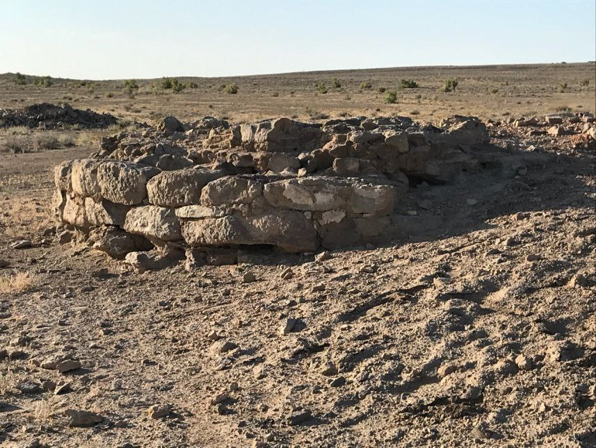

"DOSH QAL’A-1 KARVONSAROYI"
1. Me’moriy inshootning nomi:
"DOSH QAL’A-1 KARVONSAROYI"
2. Me’moriy inshoot tiklangan yil:
mil.av. II – mil. VIII asrlarga oid.
3. Me’moriy inshoot joylashgan manzil:
Xorazm viloyati Tuproqqal’a tumanida joylashgan.
4. Me’moriy inshootning qurilish materiallari:
Xom g‘isht, paxsa - guvala, qum, yog‘och
5. Inshootning bosh fasadi h.k.lar:

6. Me’moriy inshootning o‘lchamlari
O‘lchami 100x85metrni tashkil etadi,
7. Me’moriy inshoot to‘g‘risida tarixiy ma’lumot:
Doshqal’a -1 yodgorligi Xorazm Ma’mun akademiyasi tarkibida “Janubiy Xorazmning eng qadimgi va qadimgi madaniyati” va “Xorazm aholisining diniy urf-odatlari, marosimlari va dinlari tarixi” mavzularidagi loyihalar asosida Xazarasp tumani hududida amalga oshirilayotgan arxeologik tadqiqotlar shaharsozlik madaniyatiga doir ko‘plab yangi ma’lumotlarni berdi. Antik davrda urbanizatsiya jarayonlarini va chegara shaharlarini tadqiq qilishda Doshqal’a-1 yodgorligidan olingan ma’lumotlarning ahamiyati juda kattadir.
Kirish qismi sharqiy devor markazida joylashgan ushbu yodgorlikning mudofaa devori toshdan qurilgan. Bu yerda olib borilgan qazishmalar natijasida yodgorlikning yaxshi saqlangan mudofaa tizimi bilan birga qadimgi yog‘och bostirmalar qoldiqlari topildi. Yodgorlikda ibodatxona majmuasi bo‘lib, antik davrda Xorazm diniy anan’alarining rivojlanish dinamikasiga doir ilmiy muammolarni yangicha yondashuv asosida tadqiq qilishni talab etadi. Yodgorlikni ta’mirlashda uning mutlaq sanasi, stratigrafiyasi (madaniy qatlamlarning joylashishi), tipologik tuzilishi hamda mudofaa inshootlariga oid masalalar juda muhim sanaladi.
8. Me’moriy inshootning texnik holati:
Yer ustki qism 100% devor konstruksiyalari ekologik va texnogen ta’sirlar natijasida yo‘qolib ketgan
BOSH SAHIFAGA QAYTISH